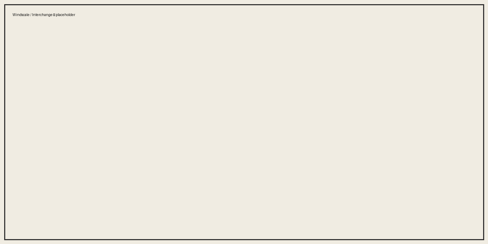

Locations & Facilities
Windscale • Interchange • Bunker lattice (L1–L15)
Main Sites
- Windscale Nuclear Facility — surface complex masking deeper research access and logistics.
- Interchange Robotics Facility — construction yards, testing ranges and maintenance bays.
- Medical & Decontamination Suites — isolation rooms, decon corridors and triage bays.
Bunker Network (L1–L15)
- L1 — Vehicle Storage / Access Node
- L2 — Access Link & Security Gate
- L3 — Logistics / Dock Interface
- L4 — Chemical Testing Bunker
- L5 — Administration / Records
- L6 — Research Labs (A/B)
- L7 — Power / Control
- L8 — Cold Storage
- L9 — Waste Disposal
- L10 — Security / Detention
- L11 — Decontamination A
- L12 — Decontamination B
- L13 — Advanced Research
- L14 — Water Treatment / Signals
- L15 — Testing Grounds / Shore Dock
